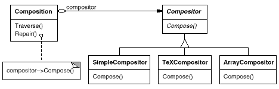

void Composition::Repair () {
switch (_breakingStrategy) {
case SimpleStrategy:
ComposeWithSimpleCompositor();
break;
case TeXStrategy:
ComposeWithTeXCompositor();
break;
// ...
}
// merge results with existing composition, if necessary
}
void Composition::Repair () {
_compositor->Compose();
// merge results with existing composition, if necessary
}

template <class AStrategy>
class Context {
void Operation() { theStrategy.DoAlgorithm(); }
// ...
private:
AStrategy theStrategy;
};
class MyStrategy {
public:
void DoAlgorithm();
};
Context<MyStrategy> aContext;

class Composition {
public:
Composition(Compositor*);
void Repair();
private:
Compositor* _compositor;
Component* _components; // the list of components
int _componentCount; // the number of components
int _lineWidth; // the Composition's line width
int* _lineBreaks; // the position of linebreaks
// in components
int _lineCount; // the number of lines
};
class Compositor {
public:
virtual int Compose(
Coord natural[], Coord stretch[], Coord shrink[],
int componentCount, int lineWidth, int breaks[]
) = 0;
protected:
Compositor();
};
void Composition::Repair () {
Coord* natural;
Coord* stretchability;
Coord* shrinkability;
int componentCount;
int* breaks;
// prepare the arrays with the desired component sizes
// ...
// determine where the breaks are:
int breakCount;
breakCount = _compositor->Compose(
natural, stretchability, shrinkability,
componentCount, _lineWidth, breaks
);
// lay out components according to breaks
// ...
}
class SimpleCompositor : public Compositor {
public:
SimpleCompositor();
virtual int Compose(
Coord natural[], Coord stretch[], Coord shrink[],
int componentCount, int lineWidth, int breaks[]
);
// ...
};
class TeXCompositor : public Compositor {
public:
TeXCompositor();
virtual int Compose(
Coord natural[], Coord stretch[], Coord shrink[],
int componentCount, int lineWidth, int breaks[]
);
// ...
};
class ArrayCompositor : public Compositor {
public:
ArrayCompositor(int interval);
virtual int Compose(
Coord natural[], Coord stretch[], Coord shrink[],
int componentCount, int lineWidth, int breaks[]
);
// ...
};
Composition* quick = new Composition(new SimpleCompositor);
Composition* slick = new Composition(new TeXCompositor);
Composition* iconic = new Composition(new ArrayCompositor(100));